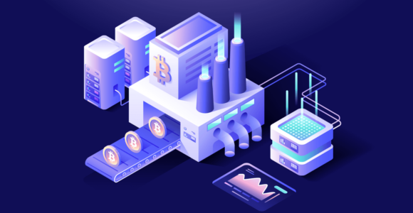

How Cryptocurrency Mining Works
This article explains why some cryptocurrencies are associated with mining, how mining works, and how to set up a home-based crypto mining operation. Get ready for a deep dive into crypto theory and practice!